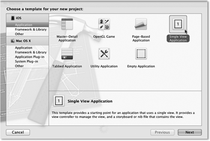

Zum Online-Shop
Zum Online-Shop»Never put off till tomorrow what you can do the day after tomorrow.«
– Mark Twain
3 Aufwachen – analoger Wecker
Ab hier geht es ans Eingemachte. In diesem Kapitel werden Sie einen analogen Wecker programmieren. Dabei stehen die Arbeit mit Xcode und die praktische Anwendung der in den ersten beiden Kapiteln ausgeführten theoretischen Grundlagen im Vordergrund. Außerdem gestalten Sie eine einfache eigene Oberfläche. Denn das wichtigste Merkmal eines analogen Weckers ist schließlich das Ziffernblatt mit den Zeigern.

3.1 Eigene View-Klassen in Cocoa Touch
Und los geht's: Legen Sie ein neues Projekt in Xcode an, und geben Sie dem Projekt den Namen AlarmClock. Der Projekttyp basiert, analog zum HelloWorld-Beispiel aus Kapitel 2, auf einem View.
Abbildung 3.1 Auswahl der Projektvorlage für den Wecker
Im zweiten Schritt sollten Sie alle Checkboxen ausschalten. Als Produktnamen und Präfix für die Klassennamen geben Sie »AlarmClock« ein (siehe Abbildung 3.2).
Abbildung 3.2 Die Parameter für das neue Projekt
Als Erstes muss der Wecker ein Ziffernblatt erhalten. Da es dafür keinen fertigen View in Cocoa Touch gibt, müssen Sie eine eigene View-Klasse erstellen. Zum Anlegen der Klasse klicken Sie mit der rechten Maustaste auf die Gruppe AlarmClock und wählen den Punkt New File... aus.
Abbildung 3.3 Hinzufügen einer neuen Klasse
Wählen Sie in der linken Spalte den Punkt Cocoa Touch in der Rubrik iOS aus. Auf der rechten Seite erscheint eine Liste mit Dateivorlagen, aus der Sie Objective-C class auswählen. Geben Sie im nächsten Schritt der Klasse den Namen ClockView, und wählen Sie als Superklasse UIView aus (siehe Abbildung 3.4) – Xcode erstellt die Klassen dann automatisch als Subklasse von UIView.
Abbildung 3.4 Subklasse von »UIView«
Im letzten Schritt wählen Sie den Ordner, die Gruppe und das Target für die Header- und die Implementierungsdatei aus. Hier können Sie einfach die Voreinstellungen übernehmen.
Abbildung 3.5 Anlegen der Klasse »ClockView« in der Gruppe »AlarmClock«
Nach dem Anlegen der Dateien offenbart ein Blick in den Quelltext der Headerdatei der neuen Klasse, dass Xcode eine Subklasse von UIView erstellt hat:
#import <UIKit/UIKit.h>
@interface ClockView : UIView
@end
Listing 3.1 Header-Datei der Klasse »ClockView«
Um diese neue Viewklasse benutzen zu können, müssen Sie dafür zunächst einen View in der XIB-Datei des Viewcontrollers anlegen, die Xcode beim Anlegen des Projekts erzeugt hat. Ziehen Sie dazu im Interface Builder, den Sie durch Auswählen der Datei AlarmClockViewController.xib aktivieren, einen UIView aus der Objektbibliothek auf den bereits vorhandenen View. Dieser Subview wird später das Ziffernblatt in der Wecker-App darstellen.
Abbildung 3.6 Ein neuer View im alten
Der neue View hat automatisch dieselbe Größe wie der bereits vorhandene erhalten.
Da das Ziffernblatt der Weckers aber nicht den ganzen Bildschirm ausfüllen soll, markieren
Sie den gerade hinzugefügten View und öffnen rechts oben im Xcode-Fenster den Größen-Inpsektor
(Show the Size inspector in Abbildung 3.7 beziehungsweise  +
+  + ).
+ ).
Setzen Sie die Koordinaten und die Größe des Views so, wie in Abbildung 3.7 dargestellt. Der Koordinatenursprung in einem View ist immer die linke obere Ecke. Die horizontale Ausdehnung wächst nach rechts und die vertikale nach unten.
Abbildung 3.7 Der Größen-Inspektor des Views
Das Ziffernblatt belegt mit dieser Einstellung nur circa zwei Drittel der oberen Fläche des iPhone-Bildschirms. Sie können das überprüfen, indem Sie das Projekt ausführen. Der Simulator zeigt jetzt eine weiße und darunter eine etwa halb so große graue Fläche an.
Über das dritte Symbol von links (neben dem Größen-Inspektor) oder + +  wählen Sie den Identitätsinspektor aus. Legen Sie dort über das oberste Eingabefeld,
Class, die Klasse des Views fest. Sie können den Klassennamen dort entweder direkt eingeben
oder aus einer Liste auswählen (siehe Abbildung 3.8). Weisen Sie dem View die neu
angelegte Klasse ClockView zu.
wählen Sie den Identitätsinspektor aus. Legen Sie dort über das oberste Eingabefeld,
Class, die Klasse des Views fest. Sie können den Klassennamen dort entweder direkt eingeben
oder aus einer Liste auswählen (siehe Abbildung 3.8). Weisen Sie dem View die neu
angelegte Klasse ClockView zu.
Abbildung 3.8 Der View bekommt die Klasse »ClockView« zugewiesen.
| Der Interface Builder kennt die Klassenhierarchie |
|
In der Liste erscheinen jeweils nur die Klasse des Elements und deren Unterklassen zur Auswahl. Da Sie das Element über einen UIView angelegt haben, erscheinen in der Liste also auch nur diese Klasse und deren Unterklassen. Wenn Sie das Element mit einer anderen Klasse angelegt hätten, würde die Klasse ClockView nicht in der Liste erscheinen. |
Die Implementierungsdatei der Klasse ClockView enthält bereits zwei Methoden. Die erste Methode heißt initWithFrame: und hat einen Parameter vom Typ CGRect. Das ist eine C-Struktur und keine Objective-C-Klasse. Diese Struktur stellt ein Rechteck über eine Koordinate und die Größe dar.
In Objective-C gibt es keine Konstruktoren, die Sie vielleicht aus anderen Programmiersprachen kennen. Die Objekterzeugung ist vielmehr in Speicherplatzreservierung und Objektinitialisierung aufgeteilt. Die Klassenmethode alloc zur Speicherplatzreservierung haben Sie bereits kennengelernt. Sie reserviert den notwendigen Speicherplatz und füllt ihn mit Nullen.
Initialisierungsmethoden kennen Sie auch schon seit dem ersten Kapitel. In Objective-C heißen per Konvention alle Initialisierungsmethoden entweder init oder haben das Präfix init. Wenn Sie einen View über den Programmcode anlegen, sollten Sie den Initializer initWithFrame: verwenden. Der Parameter ist ein Rechteck, das die Größe und Position des neuen Views relativ zu dessen Superview angibt. Der Aufbau der Methode ist im Allgemeinen wie folgt:
- (id)initWithFrame:(CGRect)inFrame {
self = [super initWithFrame:inFrame];
if(self != nil) {
// Initialisierung des Objekts
}
return self;
}
Listing 3.2 Initialisierungsmethode eines Views
Die Methode ruft als Erstes die Initialisierungsmethode der Oberklasse auf und weist deren Ergebnis der Variablen self zu. Danach überprüft sie, ob self nicht nil ist. Wenn self auf ein Objekt zeigt, kann sie das Objekt initialisieren. Schließlich gibt sie das initialisierte Objekt zurück.
Vielleicht überrascht es Sie, dass die Initialisierungsmethode self verändern kann oder nil zurückliefern darf. Das ist aber keine theoretische Möglichkeit, sondern wird auch eingesetzt. Eine Initialisierungsmethode sollte beispielsweise nil zurückgeben, wenn das Objekt nicht initialisiert werden kann. Der Initializer initWithString: der Klasse NSURL gibt beispielsweise nil zurück, wenn die angegebene URL einen syntaktischen Fehler enthält.
Die Klasse ClockView enthält in einem Kommentarblock eine weitere Methode namens drawRect:. Entfernen Sie die Kommentarzeichen um diese Methode, da Sie sie im Folgenden überschreiben. Cocoa Touch ruft sie automatisch auf, wenn es den Inhalt des Views neu zeichnen muss.
3.1.1 Zeichnen in Cocoa Touch
Es gibt in Cocoa Touch kein vorgefertigtes Element für ein Ziffernblatt, daher werden Sie alle Bestandteile, also das Ziffernblatt selber sowie die Uhrzeiger, selber zeichnen. Dafür verwenden Sie das CoreGraphics-Framework. CoreGraphics ist ein sehr mächtiges Framework, das auf reinem C und nicht auf Objective-C basiert. Deshalb enthält es keine Klassen und Methoden, sondern Datentypen, Strukturen und Funktionen. Alle zum CoreGraphics-Framework gehörenden Elemente erkennen Sie am Präfix CG.
Der Aufbau und die Implementierung der Datentypen in den Frameworks sind vor dem Nutzer versteckt. Sie können auf die Datentypen nur über Referenzen zugreifen. Die Referenzen übergeben Sie an Funktionen, die eine bestimmte Operation ausführen.
Der zentrale Datentyp in CoreGraphics ist der Grafikkontext, und die Referenzen darauf haben den Typ CGContextRef. Ein Grafikkontext speichert alle Werte für den aktuellen Zustand Ihrer Zeichenoperationen. Wenn Sie eine Zeichenoperation über einen Grafikkontext ausführen möchten, müssen Sie also zuerst die Parameter wie Farben, Muster und Clipping festlegen und danach die gewünschte Operation aufrufen. Für das Ziffernblatt werden Sie zunächst einen weißen Kreis als Grundfläche zeichnen. Die entsprechenden CoreGraphics-Operationen sehen wie folgt aus:
- (void)drawRect:(CGRect)inRectangle {
CGContextRef theContext = UIGraphicsGetCurrentContext();
CGRect theBounds = self.bounds;
CGContextSaveGState(theContext);
CGContextSetRGBFillColor(theContext, 1.0, 1.0, 1.0, 1.0);
CGContextAddEllipseInRect(theContext, theBounds);
CGContextFillPath(theContext);
CGContextRestoreGState(theContext);
}
Listing 3.3 Zeichnen einer weißen Ellipse
Das Rechteck, das als Parameter übergeben wird, ist nicht die Zeichenfläche, sondern der Bereich der Zeichenfläche, der gezeichnet werden soll. Diesen Wert verwenden Sie aber in den meisten Fällen nicht, da dieses Rechteck nur für eine Reduktion der Zeichenoperationen bei optimierter Ausgabe interessant ist. Das ist in der Regel ist aber nicht notwendig.
Als Erstes muss die Methode den aktuellen Grafikkontext ermitteln, in den die Ausgabe erfolgen kann. Das iOS erzeugt den Kontext vor dem Aufruf der drawRect:-Methode. Sie dürfen drawRect: daher niemals direkt aufrufen, da dann kein Kontext zur Verfügung steht. Wenn Sie einen View neu zeichnen lassen möchten, können Sie dafür die Methode setNeedsDisplay des Views aufrufen.
Da die Größe des Ziffernblattes von der Größe des Views abhängt, ermittelt die Methode die Koordinaten und die Größe des Views in der Variablen theBounds. Ein View hat zwei Propertys, über die Sie seine Fläche ermitteln können. Die Property frame liefert die Position und die Maße des Views relativ zu seinem Superview. Die Koordinaten des Rechtecks, das bounds liefert, sind hingegen relativ zum View selbst. In der Regel hat also dieses Rechteck den Ursprung (0, 0) und die Breite und die Höhe des Views. Das sind genau die Koordinaten, die Sie zum Zeichnen des Kreises für das Ziffernblatt benötigen.
In der nächsten Zeile sichern Sie den aktuellen Zustand des Grafikkontexts. Damit lässt sich am Ende der Methode genau dieser Zustand sehr einfach wieder herstellen. Da Sie nicht wissen, welche Zeichenoperationen in dem Grafikkontext nach der Ausführung Ihrer drawRect:-Methode noch ausgeführt werden, sollten Sie immer darauf achten, den Kontext so zu hinterlassen, wie Sie ihn vorgefunden haben. (Ganz anders als die Toiletten der Deutschen Bahn, die man ja so hinterlassen soll, wie man sie vorzufinden wünscht. Dummerweise hat man nie einen Sandstrahler dabei, wenn man ihn braucht.)
Die folgenden Zeilen zeichnen dann den Kreis des Ziffernblattes, indem zuerst die Füllfarbe als RGBA-Wert gesetzt wird. Die Fließkommawerte für die Farbkomponenten (Rot, Grün und Blau) und den Alphawert, der die Deckkraft festlegt, dürfen zwischen 0 und 1 liegen. Danach wird dem Kontext ein Pfad in Form einer Ellipse hinzugefügt. Bei einem quadratischen Ziffernblatt haben die Radien dieser Ellipse die gleiche Länge, und es entsteht ein Spezialfall der Ellipse – ein Kreis. Durch den Aufruf der Funktion CGContextFillPath() zeichnet CoreGraphics diesen Kreis schließlich mit der gesetzten Füllfarbe.
Wenn Sie Ihr Programm ausführen, werden Sie feststellen, dass immer noch ein weißes Quadrat und ein graues Rechteck angezeigt werden. Das liegt daran, dass der View für das Ziffernblatt ebenfalls Weiß als Hintergrundfarbe verwendet. Es wird also ein weißer Kreis auf weißem Grund dargestellt.
Öffnen Sie Ihren View im Interface Builder, und wählen Sie den View für das Ziffernblatt aus, indem Sie auf die entsprechende Stelle des Hauptviews klicken. Über den Attributinspektor, der zwischen dem Identitäts- und dem Größeninspektor liegt, können Sie über das Attribut Background die Hintergrundfarbe des Views verändern. Wählen Sie ein freundliches Grau oder die Transparenz (Clear Color) aus. Bei einem transparenten Hintergrund erscheint an den Stellen, die der Kreis nicht verdeckt, die Hintergrundfarbe des umgebenden Views.
Abbildung 3.9 Der Subview bekommt eine eigene Farbe.
Die Änderung lässt sich umgehend im Simulator überprüfen – das Ziffernblatt ist jetzt sichtbar – ein schöner runder Kreis.
Abbildung 3.10 Das Ziffernblatt ist fast fertig.
Das Ziffernblatt ist in diesem Stadium noch sehr minimalistisch. Im nächsten Schritt fügen Sie die Zeichenoperationen für die Darstellung der Stunden- und Minuteneinteilung hinzu. Dazu braucht die Klasse ClockView zwei neue Methoden, die Sie vor der drawRect:-Methode einfügen:
- (CGPoint)midPoint {
CGRect theBounds = self.bounds;
return CGPointMake(CGRectGetMidX(theBounds),
CGRectGetMidY(theBounds));
}
Listing 3.4 Berechnung des Mittelpunktes des Views
Die Methode midPoint berechnet den Mittelpunkt des Views relativ zum bounds-Rechteck. Die Klasse UIView hat zwar eine ähnliche Methode center, die allerdings den Mittelpunkt des frame-Rechtecks liefert, also nicht geeignet ist.
Die zweite Methode, pointWithRadius:angle:, berechnet einen Punkt, der vom Mittelpunkt eine gegebene Entfernung hat und um einen gegebenen Winkel gedreht ist. Die Winkel werden im Bogenmaß, im Uhrzeigersinn und ausgehend von 12 Uhr gerechnet. Einen Winkel w in Grad können Sie über die Formel w / 180 ins Bogenmaß umrechnen.
- (CGPoint)pointWithRadius:(CGFloat)inRadius
angle:(CGFloat)inAngle {
CGPoint theCenter = [self midPoint];
return CGPointMake(theCenter.x + inRadius * sin(inAngle),
theCenter.y – inRadius * cos(inAngle));
}
Listing 3.5 Berechnung eines Punktes über einen Radius und einen Winkel
Das Ziffernblatt stellt einen halben Tag, also 12 Stunden, dar. Somit entsprechen 12 Stunden 360° und eine Stunde 360°/12 = 30° oder 2π/12 = π/6 im Bogenmaß. Eine Stunde hat 60 Minuten, und damit hat eine Minute einen Winkel von 360°/60 = 6° oder π/30 im Bogenmaß. Für eine Sekunde gelten natürlich die gleichen Winkelwerte wie für Minuten.
Beispielsweise hat ein Zeiger auf »drei Uhr« den Winkel 90° beziehungsweise π/2 im Bogenmaß oder auf 10 Minuten den Winkel 60° beziehungsweise π/3. Die Position eines Uhrzeigers oder eines Strichs auf dem Ziffernblatt kann also durch die Angabe eines Winkels und ein oder mehrere Längenangaben bestimmt werden.
| Mathematik für Einsteiger |
|
Sie werden sich möglicherweise fragen, was die viele Mathematik im ersten echten Beispiel soll. Nun, die Antwort ist einfach. Mathematik begegnet einem Programmierer häufiger, als ihm bisweilen lieb ist. Gerade bei der Erstellung von Frontends und der Arbeit mit Grafiken und Animationen ist in der Regel gutes mathematisches Grundverständnis gefragt. Die im Wecker-Beispiel angewandte Mathematik ist ja kein Selbstzweck, sondern resultiert direkt aus der Verwendung des CoreGraphics-Frameworks. Eine kleine Auffrischung Ihres Wissens über Bogenmaß, Winkelberechnung etc. finden Sie bei Wikipedia[15](https://secure.wikimedia.org/wikipedia/de/wiki/Bogenmass). |
Das Ziffernblatt soll Minuten durch einen Punkt und Stunden durch einen Strich darstellen. Die Striche für drei, sechs, neun und zwölf Uhr sollen dabei etwas länger als die sonstigen Stundenstriche sein. Die Einteilungen werden über eine Schleife gezeichnet, die von 0 bis 59 läuft, für jede Minute ein Durchlauf.
Da alle Einteilungen die gleiche Farbe, Linienstärke und Linienenden haben sollen, können Sie diese Einstellungen vor der Schleife festlegen. Beachten Sie, dass die Stunden-Einteilungen Linien und die Minuten-Einteilungen Kreise sind. Die Linienfarbe müssen Sie über CGContextSetRGBStrokeColor() setzen. Die Stundenstriche sollen außerdem abgerundete Linienenden haben, was Sie über die Funktion CGContextSetLineCap() festlegen können. Da diese runden Kappen aber auf den Enden der Linien sitzen, reichen sie über den Rand des Ziffernblattes hinaus. Sie können das durch ein Clipping verhindern. Ein Clipping ist eine unsichtbare Maske auf der Zeichenfläche, mit der Sie die Zeichenfläche in Bereiche unterteilen können. Der Grafikkontext zeichnet dann nur in den Bereichen, die zum Clipping gehören. Als Clipping-Region verwenden Sie den Kreis des Ziffernblattes. Sie fügen dessen Pfad erneut dem Kontext hinzu und setzen diesen in der Methode drawRect: durch Aufruf von CGContextClip als Clipping-Pfad. Listing 3.6 enthält die soeben beschriebenen Funktionsaufrufe für die Kontexteinstellungen:
CGContextSetRGBStrokeColor(theContext, 0.25, 0.25, 0.25, 1.0);
CGContextSetRGBFillColor(theContext, 0.25, 0.25, 0.25, 1.0);
CGContextSetLineWidth(theContext, 7.0);
CGContextSetLineCap(theContext, kCGLineCapRound);
CGContextAddEllipseInRect(theContext, theBounds);
CGContextClip(theContext);
Listing 3.6 Setzen von Zeichenattributen im Grafikkontext
Die Schleife zum Zeichnen der Einteilungen sieht folgendermaßen aus:
for(NSInteger i = 0; i < 60; ++i) {
CGFloat theAngle = i * M_PI / 30.0;
if(i % 5 == 0) {
CGFloat theInnerRadius = theRadius *
(i % 15 == 0 ? 0.7 : 0.8);
CGPoint theInnerPoint =
[self pointWithRadius:theInnerRadius
angle:theAngle];
CGPoint theOuterPoint = [self
pointWithRadius:theRadius
angle:theAngle];
CGContextMoveToPoint(theContext, theInnerPoint.x,
theInnerPoint.y);
CGContextAddLineToPoint(theContext, theOuterPoint.x,
theOuterPoint.y);
CGContextStrokePath(theContext);
}
else {
CGPoint thePoint =
[self pointWithRadius:theRadius * 0.95
angle:theAngle];
CGContextAddArc(theContext, thePoint.x, thePoint.y,
3.0, 0.0, 2 * M_PI, YES);
CGContextFillPath(theContext);
}
}
Listing 3.7 Zeichnen eines Ziffernblattes
Anhand der Schleifenvariablen i können Sie entscheiden, um welchen Einteilungstyp es sich handelt. Wenn ihr Wert durch 5 teilbar ist, muss es ein Strich sein. Ist sie außerdem auch durch 15 teilbar, so muss es ein langer Strich sein. Alle anderen Werte sind Punkte. Die Länge der Striche und die Lage der Punkte errechnen sich relativ zum Radius des Ziffernblattes.
Zum Zeichnen der Punkte wird die Funktion CGContextAddArc() verwendet. Es ist hier einfacher, den Kreis über dessen Mittelpunkt und Radius zu bestimmen als über sein umgebendes Rechteck. Über diese Funktion können Sie beliebige Kreisbögen erzeugen, weswegen Sie den Start- und den Endwinkel des Bogens im Bogenmaß angeben müssen.
Damit Sie prüfen können, ob Sie auf dem richtigen Weg sind, sehen Sie hier noch einmal die ganze Methode drawRect: an einem Stück:
- (void)drawRect:(CGRect)inRectangle {
CGContextRef theContext = UIGraphicsGetCurrentContext();
CGRect theBounds = self.bounds;
CGFloat theRadius = CGRectGetWidth(theBounds) / 2.0;
CGContextSaveGState(theContext);
CGContextSetRGBFillColor(theContext, 1.0, 1.0, 1.0, 1.0);
CGContextAddEllipseInRect(theContext, theBounds);
CGContextFillPath(theContext);
CGContextAddEllipseInRect(theContext, theBounds);
CGContextClip(theContext);
CGContextSetRGBStrokeColor(theContext,0.25, 0.25, 0.25, 1.0);
CGContextSetRGBFillColor(theContext,0.25, 0.25, 0.25, 1.0);
CGContextSetLineWidth(theContext, 7.0);
CGContextSetLineCap(theContext, kCGLineCapRound);
for(NSInteger i = 0; i < 60; ++i) {
CGFloat theAngle = i * M_PI / 30.0;
if(i % 5 == 0) {
CGFloat theInnerRadius = theRadius * (i % 15 == 0 ? 0.7 : 0.8);
CGPoint theInnerPoint =
[self pointWithRadius:theInnerRadius angle:theAngle];
CGPoint theOuterPoint =
[self pointWithRadius:theRadius angle:theAngle];
CGContextMoveToPoint(theContext, theInnerPoint.x, theInnerPoint.y);
CGContextAddLineToPoint(theContext, theOuterPoint.x,
theOuterPoint.y);
CGContextStrokePath(theContext);
}
else {
CGPoint thePoint =
[self pointWithRadius:theRadius * 0.95 angle:theAngle];
CGContextAddArc(theContext,thePoint.x, thePoint.y, 3.0, 0.0, 2 * M_PI, YES);
CGContextFillPath(theContext);
}
}
[self drawClockHands];
CGContextRestoreGState(theContext);
}
Listing 3.8 Die komplette Methode zum Zeichnen des Ziffernblattes
Abbildung 3.11 Das Ziffernblatt des Weckers
Die Methode drawClockHands, deren Aufruf am Ende von drawRect: erfolgt, zeichnet die Zeiger des Weckers. Für die Implementierung müssen Sie die aktuelle Systemzeit in Winkel umrechnen, damit Sie die Zeiger durch Linien darstellen können.
3.1.2 Zeitberechnung
Der ClockView soll die angezeigte Zeit in der Property time speichern. Diese hat den Typ NSDate, dessen Objekte einen Zeitpunkt basierend auf einem Referenzzeitpunkt enthalten. Da die Property das Datumsobjekt halten muss, bekommt sie den Speicherverwaltungstyp retain. Das Datumsobjekt enthält den Zeitpunkt als Anzahl der Sekunden zu einem festgelegten Referenzzeitpunkt – dem 1. Januar 2001 in der Zeitzone Greenwich Mean Time, aber die Umrechnung des Zeitpunktes in eine Datumsdarstellung ist sehr schwer. Dafür gibt es eigene Klassen. Das klingt zunächst unnötig kompliziert, hat aber einige Vorteile:
- Sie können mit Datumsobjekten gut rechnen. Beispielsweise können Sie einen weiteren Zeitpunkt durch Addition eines positiven oder negativen Zeitintervalls berechnen.
- Der Wert eines Zeitpunktes hat überall auf der Welt und zu jeder Zeit die gleiche Bedeutung.
- Es gibt sehr viele unterschiedliche Kalender und Zeitzonen. Es gibt also sehr viele verschiedene Darstellungen des gleichen Zeitpunktes. Es ist einfacher, einen Zeitpunkt in eine Datumsdarstellung umzuwandeln, als eine Datumsdarstellung in eine andere.
- Die interne Uhr aller Computer – auch die der iPhones und iPads – und der Atomuhren stellen die aktuelle Zeit als Differenz zu einem Referenzzeitpunkt dar. Für die Erzeugung eines Datumsobjekts braucht der Computer also nicht viel Rechenzeit.
Um einen Zeitpunkt in eine Datumsdarstellung umzurechnen, gibt es zwei Klassen im Foundation-Framework. Mit NSDateFormatter können Sie zu einem NSDate-Objekt eine Zeichenkette erzeugen, die das enthaltene Datum darstellt. Diese Klasse kommt im Beispielprojekt des nächsten Kapitels zum Einsatz.
Mit Objekten der Klasse NSCalendar berechnen Sie basierend auf einer Zeitzone und einer Region die Datumskomponenten zu einem Zeitpunkt und umgekehrt. Mit dieser Klasse und ein bisschen Rechnerei können Sie also die Positionen der Uhrzeiger zu einem Zeitpunkt bestimmen. Aus diesem Grund enthält die Klasse eine weitere, haltende Property vom Typ NSCalendar.
Mit der Methode components:fromDate: aus der Kalenderklasse können Sie ein NSDateComponents-Objekt berechnen lassen, das die benötigten Zeitkomponenten (Stunde, Minute und Sekunde) enthält. Mit den oben gegebenen Formeln können Sie daraus dann die entsprechenden Winkel für die Darstellung bestimmen. Wenn Sie allerdings die Stunde in einen Winkel umrechnen, bekommen Sie einen Stundenzeiger, der immer nur auf volle Stunden zeigt. Bei einer analogen Uhr soll er aber beispielsweise um halb fünf genau zwischen der vierten und fünften Stunde stehen. Das können Sie vermeiden, indem Sie zum Stundenwert den Minutenanteil hinzurechnen. Da eine Stunde bekanntlich 60 Minuten hat, ist der Minutenanteil einer Stunde ein Sechzigstel des Minutenwertes.
NSDateComponents *theComponents =
[self.calendar components:NSHourCalendarUnit | NSMinuteCalendarUnit | NSSecondCalendarUnit fromDate:self.time];
CGFloat theSecond = theComponents.second * M_PI / 30.0;
CGFloat theMinute = theComponents.minute * M_PI / 30.0;
CGFloat theHour = (theComponents.hour + theComponents.minute / 60.0) * M_PI / 6.0;
Listing 3.9 Berechnung der Winkel für Sekunde, Minute und Stunde
Die Variablen theSecond, theMinute und theHour enthalten den Winkel, der der entsprechenden Zeigerstellung entspricht. Der Faktor π/30 = 2π/60 in der Berechnung entspricht dabei dem Winkel im Bogenmaß von einer Sekunde beziehungsweise einer Minute. Analog ist π/6 = 2π/12 der Winkel, der einer Stunde auf einem Ziffernblatt entspricht.
| Ist er Ihr Typ? |
|
Bei der Berechnung des Minutenanteils verwendet Listing 3.9 nicht 60 sondern 60.0 als Teiler. Der Unterschied dieser beiden Werte ist ihr Datentyp. Während 60 den Typ int hat, ist 60.0 ein double. Da der Minutenwert theComponents.minute den Typ NSInteger hat, würde bei einer Division durch 60 eine Ganzzahldivision ausgeführt. Der Minutenwert liegt immer zwischen 0 und 59, bei einer Ganzzahldivision kommt also immer – Tusch – 0 raus. Die Rechnung können Sie sich also sparen. Bei einer Fließkommadivision kommen hingegen Werte zwischen 0 und 0.99 raus. |
Jetzt brauchen Sie nur noch die drei Zeiger zu zeichnen, indem Sie eine Linie vom Mittelpunkt des Views in Richtung des jeweiligen Winkels ziehen. Die drei Linien unterscheiden sich aber nicht nur hinsichtlich ihres Winkels, sondern auch in der Länge, der Farbe und der Linienstärke.
Den Zielpunkt der Zeiger berechnen Sie über die Methode pointWithRadius: angle:, wobei Sie die unterschiedlichen Längen durch die Verwendung unterschiedlicher Radien erzielen. Das Zeichnen der einzelnen Zeiger ist recht ähnlich und unterscheidet sich nur in den unterschiedlichen Zeichenattributen für die Linien. Die gesamte Methode drawClockHands sieht dann wie folgt aus:
- (void)drawClockHands {
CGContextRef theContext = UIGraphicsGetCurrentContext();
CGPoint theCenter = [self midPoint];
CGFloat theRadius = CGRectGetWidth(self.bounds) / 2.0;
NSDateComponents *theComponents = [self.calendar components:NSHourCalendarUnit | NSMinuteCalendarUnit | NSSecondCalendarUnit fromDate:self.time];
CGFloat theSecond = theComponents.second * M_PI / 30.0;
CGFloat theMinute = theComponents.minute * M_PI / 30.0;
CGFloat theHour = (theComponents.hour + theComponents.minute / 60.0) * M_PI / 6.0;
CGPoint thePoint = [self pointWithRadius:theRadius * 0.7 angle:theHour];
CGContextSetRGBStrokeColor(theContext, 0.25, 0.25, 0.25, 1.0);
CGContextSetLineWidth(theContext, 7.0);
CGContextSetLineCap(theContext, kCGLineCapButt);
CGContextMoveToPoint(theContext, theCenter.x, theCenter.y);
CGContextAddLineToPoint(theContext, thePoint.x, thePoint.y);
CGContextStrokePath(theContext);
thePoint = [self pointWithRadius:theRadius * 0.9 angle:theMinute];
CGContextSetLineWidth(theContext, 5.0);
CGContextMoveToPoint(theContext, theCenter.x, theCenter.y);
CGContextAddLineToPoint(theContext, thePoint.x, thePoint.y);
CGContextStrokePath(theContext);
thePoint = [self pointWithRadius:theRadius * 0.95 angle:theSecond];
CGContextSetLineWidth(theContext, 3.0);
CGContextSetRGBStrokeColor(theContext, 1.0, 0.0, 0.0, 1.0);
CGContextMoveToPoint(theContext, theCenter.x, theCenter.y);
CGContextAddLineToPoint(theContext, thePoint.x, thePoint.y);
CGContextStrokePath(theContext);
}
Listing 3.10 So werden die Uhrzeiger des Weckers gezeichnet.
3.1.3 View-Erzeugung über NIB-Dateien
Sie müssen den beiden Propertys vor der ersten Anzeige des Views nun noch sinnvolle Werte zuweisen. Dazu können Sie den Initializer entsprechend erweitern. Die betreffenden Werte müssen Sie in der Methode dealloc natürlich auch wieder freigeben, indem Sie die Propertys auf nil setzen.
- (id)initWithFrame:(CGRect)inFrame {
self = [super initWithFrame:inFrame];
if(self) {
self.calendar = [NSCalendar currentCalendar];
self.time = [NSDate date];
}
return self;
}
- (void)dealloc {
self.calendar = nil;
self.time = nil;
[super dealloc];
}
Listing 3.11 Initialisierung und Freigabe der Propertys der Zeitanzeige
Ihr Programm verwendet die Initialisierungsmethode initWithFrame: allerdings nur, wenn Sie Ihren View direkt über Programmcode erzeugen. Die App lädt diesen View aber aus einer NIB-Datei oder einem Storyboard und ruft dabei diese Methode nicht auf.
Für diesen Fall gibt es zwei mögliche Alternativen. Sie können eine weitere Initialisierungsmethode namens initWithCoder: oder eine Methode namens awakeFromNib implementieren. Sie dürfen dabei eine oder auch beide Methoden verwenden. Die Initialisierung eines Objekts aus einer NIB-Datei erfolgt über initWithCoder:, sofern sie diese Methode besitzt. Bei allen anderen Klassen kommt die Initialisierungsmethode init zum Einsatz. Da die Klasse UIView das Protokoll NSCoder adaptiert und somit diesen Initializer bereitstellt, erfolgt die Initialisierung immer darüber. Sind alle Objekte aus der NIB-Datei erzeugt, wird jedes Objekt durch die Nachricht awakeFromNib wachgeküsst – aber auch nur, wenn es diese Methode auch besitzt.
Wie bereits weiter oben erwähnt wurde, sind alle Objekte in einer NIB-Datei als serialisierte Daten abgelegt. Die Serialisierung enthält alle notwendigen Informationen, um diese Objekte wiederherzustellen. Zu diesen Informationen gehören die Klassen, die Attributwerte und die Anordnung der Objekte zueinander. Während NIB-Dateien dafür ein kompaktes, binäres Dateiformat verwenden, verwenden XIB-Dateien und Storyboards ein XML-Format.
Wenn die Deserialisierung die Methode initWithCoder: des neuen Objekts aufruft, übergibt sie einen Parameter vom Typ NSCoder mit den notwendigen Daten für dieses Objekt. Da Ihre Klasse aber die Serialisierung nicht erweitert, brauchen Sie den Parameter nur für den Initialisierer-Aufruf der Oberklasse. Wenn Sie die Methode initWithCoder: implementieren, sollten Sie immer als Erstes diese Methode der Oberklasse aufrufen, wie in Listing 3.12 gezeigt.
- (id)initWithCoder:(NSCoder *)inCoder {
self = [super initWithCoder:inCoder];
if(self) {
self.calendar = [NSCalendar currentCalendar];
self.time = [NSDate date];
}
return self;
}
Listing 3.12 Initialisierung der Propertys bei der Deserialisierung
Nach der Erzeugung aller Objekte aus einer NIB-Datei ruft Cocoa Touch die Methode awakeFromNib bei allen erzeugten Objekten auf. Wenn Sie diese Methode überschreiben, sollten Sie auch immer als Erstes die Methode in der Oberklasse aufrufen.
- (void)awakeFromNib {
[super awakeFromNib];
self.calendar = [NSCalendar currentCalendar];
self.time = [NSDate date];
}
Listing 3.13 Initialisierung der Propertys nach der Deserialisierung
Verlassen Sie sich aber weder bei initWithCoder: noch bei awakeFromNib auf eine feste Aufrufreihenfolge. Für die Initialisierung ist häufig awakeFromNib die geeignetere Wahl, da bei Aufruf dieser Methode auch alle anderen Objekte des NIB-Files die Initialisierung durchlaufen.
3.1.4 Aktualisierung der Zeitanzeige
Als Nächstes soll die Zeitanzeige kontinuierlich aktualisiert werden. Diese Aufgabe kann entweder der View selbst oder der Viewcontroller übernehmen. Da aber jedes Objekt der Klasse ClockView diese Aufgabe erfüllen sollte, wird der dafür nötige Code in der View-Klasse angesiedelt.
Für die Aktualisierung der Zeitanzeige müssen Sie nur in regelmäßigen Abständen den Wert der Property time aktualisieren. Wenn Sie eine kurze Aufgabe wiederholt ausführen möchten, können Sie dafür die Klasse NSTimer verwenden.
Die Klasse ClockView erhält dazu eine weitere Property von diesem Typ und jeweils eine Methode zum Starten und zum Stoppen der Aktualisierung.
Sie können so die Property vor dem allgemeinen Zugriff verstecken. In der anonymen Kategorie können Sie sämtliche Methoden und Propertys deklarieren, die die Klasse ClockView nur intern braucht und die nicht für die Öffentlichkeit bestimmt sind.
@interface ClockView : UIView
...
- (void)startAnimation;
– (void)stopAnimation;
@end
Listing 3.15 Deklarationen für die automatische Aktualisierung der Zeitanzeige
Ein Timer kann eine Methode in einem Objekt nach einer festen Zeitspanne aufrufen. Er kann das einmal oder auch kontinuierlich machen. In der Methode startAnimation müssen Sie also ein Timer-Objekt erzeugen und starten. In stopAnimation müssen Sie es hingegen anhalten und zerstören. Sie können über die Property für den Timer außerdem verhindern, dass der Timer versehentlich mehrmals gestartet wird. Dazu prüft die zweite Zeile in Listing 3.16, ob die Property timer bereits auf einen Timer verweist.
- (void)startAnimation {
if(self.timer == nil) {
self.timer = [NSTimer
scheduledTimerWithTimeInterval:0.5
target:self selector:@selector(updateTime:)
userInfo:nil repeats:YES];
}
}
– (void)stopAnimation {
[self.timer invalidate];
self.timer = nil;
}
Listing 3.16 Starten und Stoppen der Animation
Die Anweisung in der dritten Zeile erzeugt und startet einen kontinuierlichen Timer und weist ihn der Property timer zu. Dabei geben der zweite und der dritte Parameter an, dass der Timer die Methode updateTime: im aktuellen Objekt aufrufen soll. Der Doppelpunkt im Selektor zeigt an, dass diese Methode einen Parameter erwartet. Das Zeitintervall beträgt eine halbe Sekunde, damit der Timer die Anzeige zweimal pro Sekunde aktualisiert. Da die Methodenaufrufe nicht in exakten Zeitabständen erfolgen, könnten bei längeren Zeitintervallen (z. B. einer Sekunde) sonst Sprünge auftreten.
Anonyme Kategorien erlauben auch das Überschreiben der Read-Only-Eigenschaft von Propertys. Dazu müssen Sie die Property, die Sie als readonly in der Schnittstelle der Klasse deklariert haben, genau mit den gleichen Parametern und dem Parameter readwrite in der anonymen Kategorie deklarieren. Sie dürfen keinen Parameter – bis auf readonly – bei der Redeklaration verändern. Außerdem müssen Sie natürlich im Header auch schon den Speicherverwaltungstyp angeben. Die Property calendar der Klasse ClockView soll von außen unveränderbar sein:
// Deklaration in ClockView.h
@property (nonatomic, retain, readonly)
NSCalendar *calendar;
// Deklaration in der anonymen Kategorie in ClockView.m
@property (nonatomic, retain, readwrite)
NSCalendar *calendar;
Listing 3.17 Öffentliche Read-Only- und private Read-Write-Property
Sie können nach dieser Änderung in der Implementierung von ClockView die Property calendar wie bisher verwenden. Außerhalb der Implementierung können Sie die Property aber jetzt nur noch auslesen. Eine Veränderung des Wertes ist nun nicht mehr möglich.
| Tipp |
|
Verwenden Sie anonyme Kategorien, um Implementierungsdetails Ihrer Klassen nach außen hin zu verstecken. Anonyme Kategorien erlauben Ihnen eine klarere Strukturierung Ihrer Schnittstellen. |
Die Methode updateTime: aktualisiert den Wert der Property time. Damit Cocoa Touch den View danach auch neu zeichnet, müssen Sie auch noch die Methode setNeedsDisplay aufrufen. Sie zeichnet den View allerdings nicht direkt neu, sondern markiert ihn nur zum Neuzeichnen. Das macht das Betriebssystem erst dann, wenn es dafür die Zeit hat.
- (void)updateTime:(NSTimer *)inTimer {
self.time = [NSDate date];
[self setNeedsDisplay];
}
Listing 3.18 Aktualisierung der Zeitanzeige
| Automatische Aktualisierung des Views versus Animationen |
|
Die in diesem Abschnitt vorgestellten Methoden dienen der automatischen Aktualisierung
eines Views. Dieses Vorgehen ist für diesen Anwendungsfall auch durchaus ausreichend,
da Sie die Zeiger nur zweimal pro Sekunde neu zeichnen müssen. Bei jeder Aktualisierung
zeichnet der View nicht nur die Zeiger, sondern auch das komplette Ziffernblatt neu.
Die Uhr läuft aber trotzdem flüssig.
|
3.1.5 Wiederverwendbarkeit von Views
Die Klasse ClockView hat bis jetzt keine Abhängigkeiten zu dem Viewcontroller oder dem Application-Delegate. Sie ist also vollkommen unabhängig von der Controller- oder gar der Modellschicht des Programms. Das ist so gewollt und soll auch so bleiben. Die Unabhängigkeit erlaubt es Ihnen, beliebig viele Uhren in Ihrem Projekt anzulegen.
Sie können also erneut die XIB-Datei öffnen und weitere ClockView-Objekte so anlegen, wie oben beschrieben wurde. Sie müssen also einfach nur im Interface Builder weitere UIView-Objekte auf den Hauptview ziehen und die Klasse des neuen Objekts auf ClockView ändern. Sie können sogar die Header- und die Implementierungsdatei der Klasse in ein anderes Projekt übertragen und den View dort ohne Einschränkungen oder weitere notwendige Schritte verwenden. Die Größen der Uhren lassen sich über den Größeninspektor auch beliebig anpassen. Sie können sogar Ziffernblätter erzeugen, die nicht kreis-, sondern ellipsenförmig sind. Letztere sehen aber zugegebenermaßen etwas gewöhnungsbedürftig aus. Außerdem können Sie die Farbe für den Hintergrund hinter dem Ziffernblatt frei wählen.
Ein möglichst hoher Wiederverwendungsgrad sollte immer Ihr Ziel bei der Entwicklung eigener View-Komponenten sein. Zugegebenermaßen kann der View auch nur eine Uhrzeit darstellen. Sie lernen aber im Verlauf dieses Buches noch weitere Möglichkeiten kennen, wie der View mit den Objekten aus den anderen Schichten interagieren kann, ohne dass dabei Abhängigkeiten zu Klassen aus diesen Schichten entstehen.
Das Beispielprogramm AlarmClock, das Sie auf der mitgelieferten DVD oder im Github-Repository finden, enthält alle Schritte, die wir bis jetzt unternommen haben, um unseren Wecker zu erstellen. Um die Wiederverwendbarkeit der Klasse zu demonstrieren, zeigt dieses Programm mehrere Uhren in unterschiedlichen Größen an.
Abbildung 3.12 Wiederverwendung eines Views
Ihr Kommentar
Wie hat Ihnen das <openbook> gefallen? Wir freuen uns immer über Ihre freundlichen und kritischen Rückmeldungen.


{kind=link}
{kind=link}
{kind=link}
{kind=link}
{kind=link}
{kind=link}
{kind=link}
{kind=link}
{kind=link}
{kind=link}
{kind=link}
{kind=link}